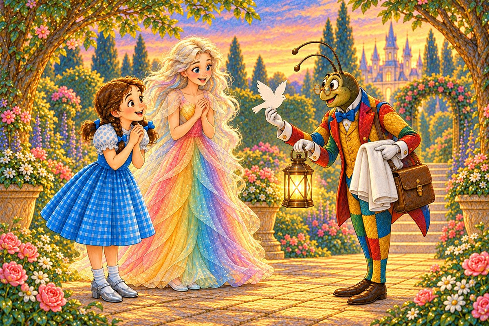
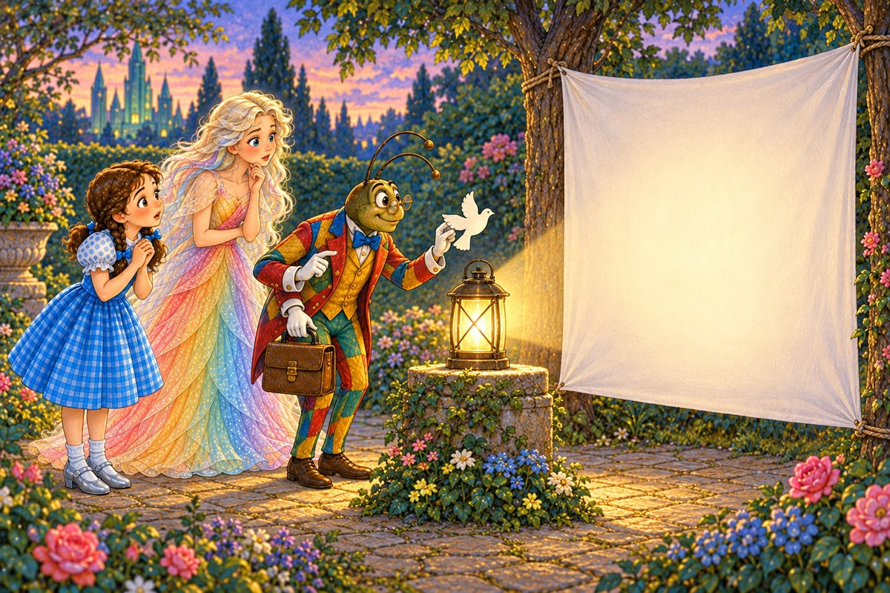
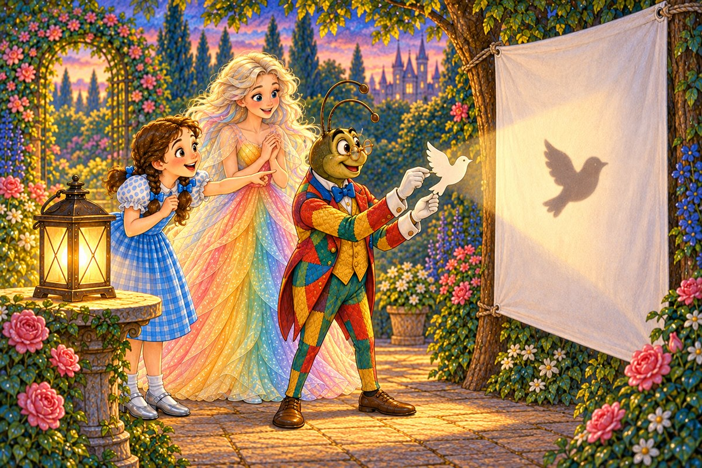
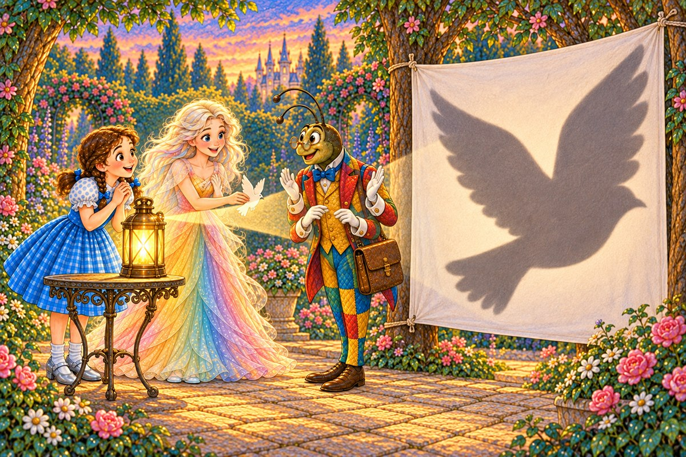
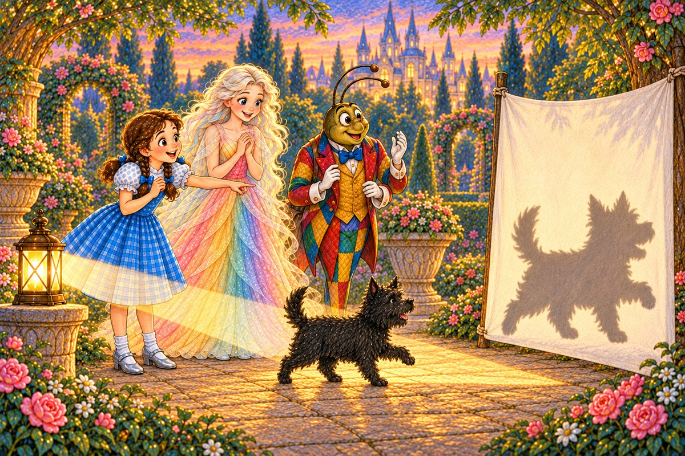
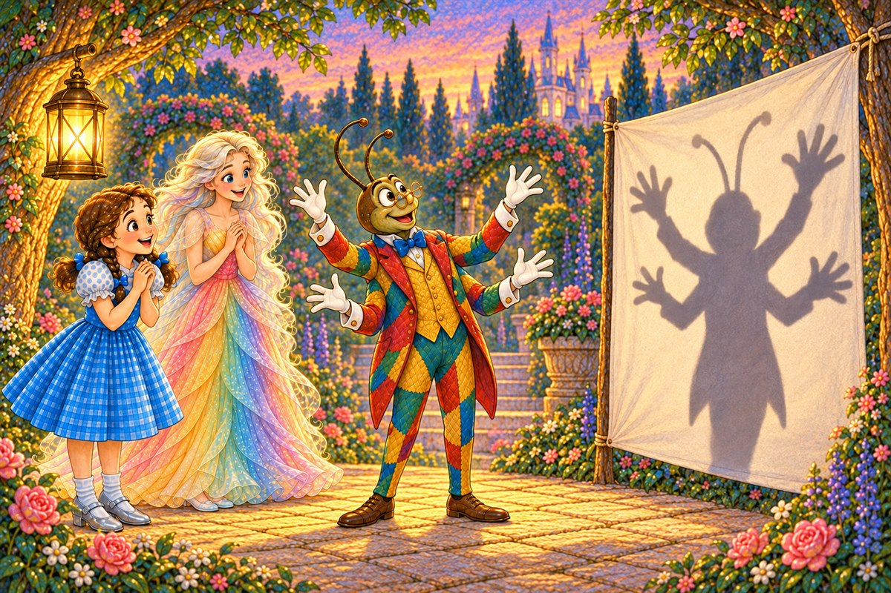
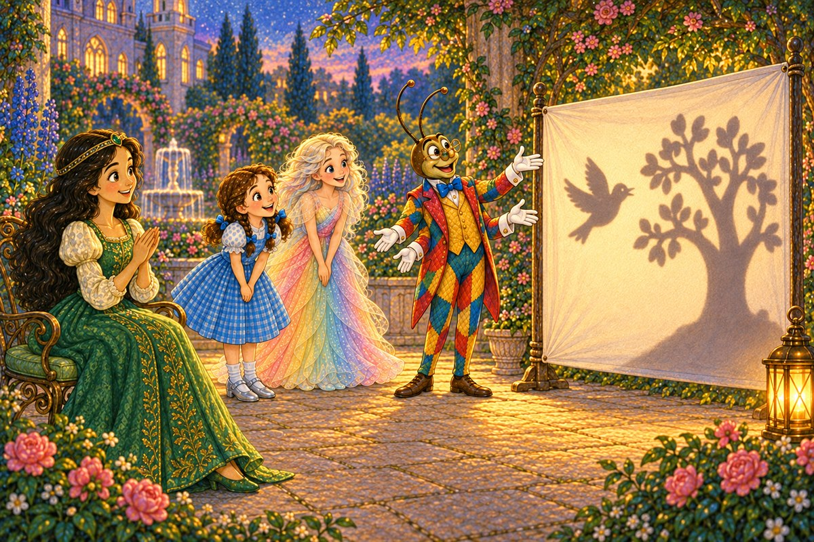

Pahina 1
Kinagabihan, bumalik si Propesor Wogglebug.
May dala siyang ilawan, puting tela, at ibon na ginupit mula sa makapal na papel.
Isa pang eksperimento sa Lupain ng Oz
Basahin ang tatlong bagong pahina bawat araw. Bago magpatuloy, balikan muna ang mga pahinang nabasa na.

Kinagabihan, bumalik si Propesor Wogglebug.
May dala siyang ilawan, puting tela, at ibon na ginupit mula sa makapal na papel.
“Maghahanda tayo ng dula ng mga anino para kay Ozma,” sabi niya.
Isinabit nina Dorothy at Polychrome ang puting tela sa pagitan ng dalawang puno.

Inilagay ni Dorothy ang ilawan ilang hakbang mula sa tela.
Hinawakan ng propesor ang ibong papel sa tabi ng ilawan.
Walang anino sa puting tela.

“Dapat nasa pagitan ng ilaw at tela ang bagay,” paliwanag niya.
Inilipat niya ang ibon sa tamang lugar.
Biglang lumitaw ang munting anino nito.
Maliit ang anino.
“Paano natin ito palalakihin?” tanong ni Dorothy.
“Ilalapit natin ang ibon sa ilawan,” sagot ng propesor.

Inilapit ni Polychrome ang ibon sa ilawan.
Lumaki ang anino sa tela.
Inilayo niya ang ibon sa ilawan.
Lumiit muli ang anino.

Biglang dumaan si Toto sa pagitan ng ilawan at tela.
Lumitaw ang malaking anino niya.
Tumahol siya at tumalon palayo.

Itinaas ng propesor ang apat niyang kamay.
Gumalaw ang malaking anino na parang kakaibang puno.
Nagtawanan sina Dorothy at Polychrome.
Dumating si Ozma at umupo sa harap ng tela.
Pumunta sa likod ng tela ang mga kaibigan.
Handa na ang dula.
Ipinagalaw ni Dorothy ang ibong papel.
Inilapit niya ito sa ilawan, at lumaki ang anino.
Inilayo niya ito, at lumiit ang anino.

Ginawang mga sanga ng propesor ang apat niyang kamay.
Lumipad ang anino ng ibon papunta sa puno.
“Isang ibon!” masayang hula ni Ozma.
Masayang yumuko sila.
“Hinaharangan ng bagay ang ilaw, kaya lumilitaw ang anino. Kapag inilapit sa ilawan ang ibon, lumalaki ang anino,” sabi ni Ozma.
Pag-usapan natin